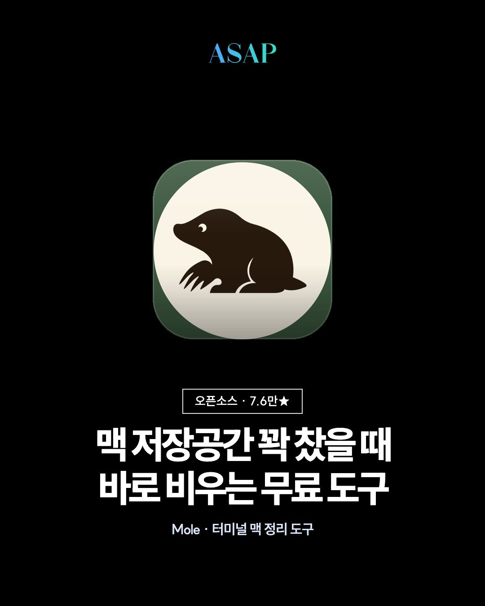

테크 · 인스타그램 · 2026-11-27
Mole: 맥 저장공간을 정리하는 무료 오픈소스 터미널 도구
Mole은 캐시·로그·앱 찌꺼기를 찾아 비우고 폴더별 용량과 시스템 상태까지 보여 주는 무료 오픈소스 맥 정리 도구다.

- Mole은 유료 맥 정리 앱들이 하던 기능을 하나로 묶은 무료 오픈소스 터미널 도구로, GitHub 스타 7.6만 개를 받았다.
- mo clean은 앱·크롬·사파리·앱스토어 캐시와 로그를 항목별로 보여 주고 지운 뒤 늘어난 빈 공간을 알려 준다.
- 지우기 전에 미리보기(드라이 런)로 비울 수 있는 용량부터 확인할 수 있다.
- mo uninstall은 앱을 지울 때 남는 설정·캐시까지 함께 지우고, 개인 데이터는 기본으로 남겨 둔다.
- mo analyze는 폴더별 사용 용량을 보여 주고, 방향키로 들어가 큰 파일을 찾거나 90일 넘은 다운로드를 따로 골라 준다.
- mo status는 CPU·메모리·디스크·배터리 상태와 맥 건강 점수를 보여 주며, 보기 전용이라 아무것도 바꾸지 않는다.